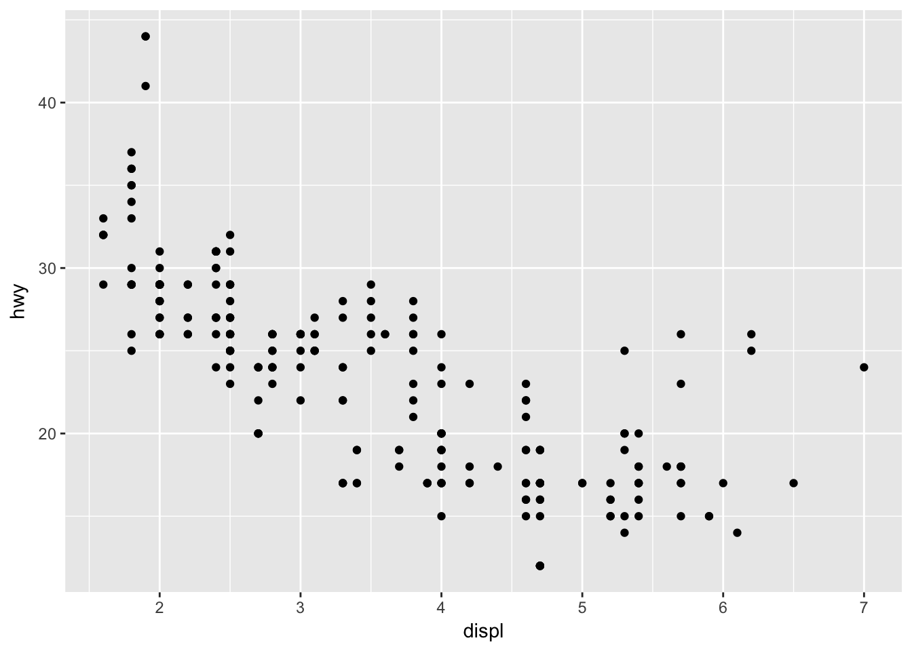
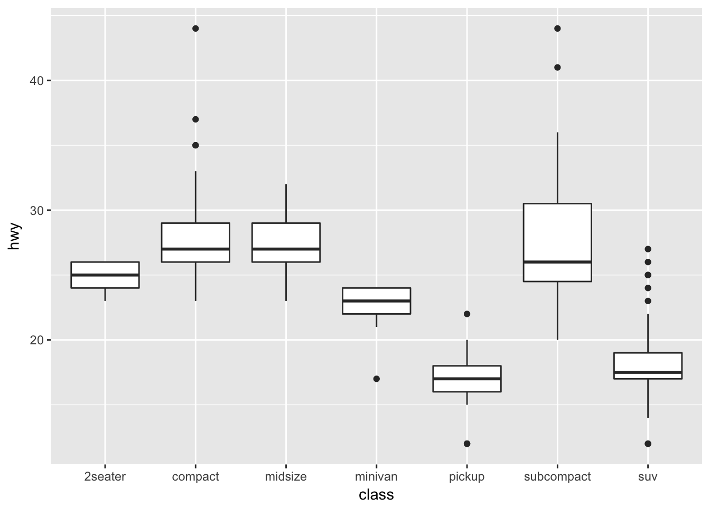
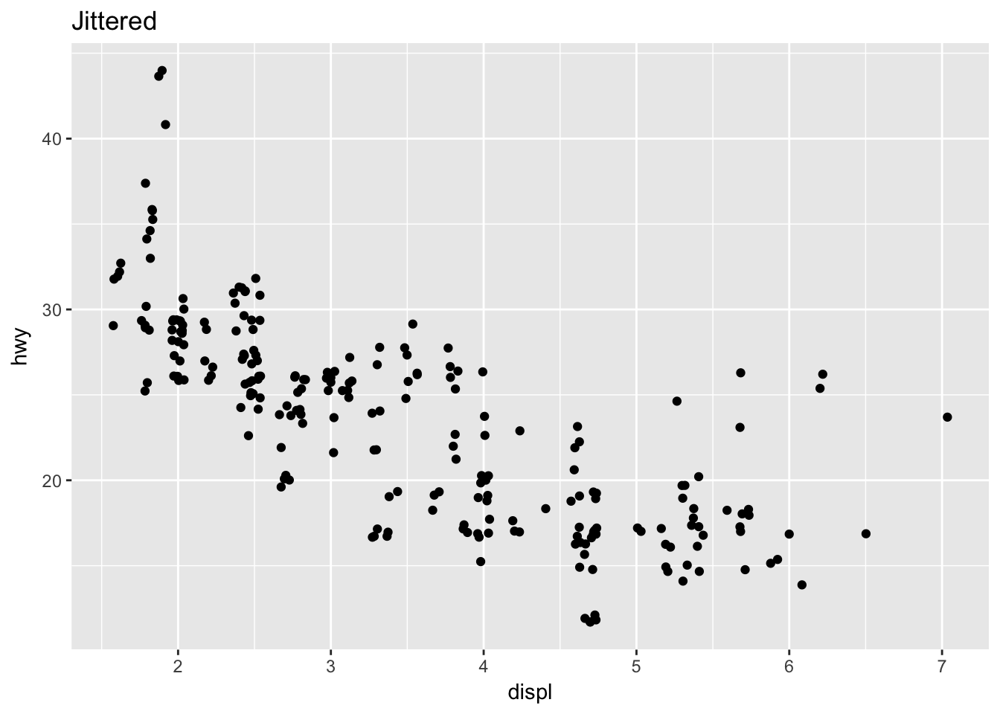

ggplot2 is a plotting system for R, based on the grammar of graphics, which tries to take the good parts of base and lattice graphics and none of the bad parts.
mpg dataset
Fuel economy data from 1999 and 2008 for 38 popular models of car., see ?mpg for details.
What is the relationship between an engine size displ and mileage on highway hwy?
ggplot(data = mpg) +
geom_point(aes(x = displ, y = hwy))
aesthetic mappings
Aesthetic mappings aes connect data space and visual spaces.
set vs. map
Challenge 1
What is a difference between those two graphs? First guess, then try.
# Graph 1: color is in aes
ggplot(data = mpg) + geom_point(aes(x = displ, y = hwy, color = "green"))
# Graph 2: color is out of aes
ggplot(data = mpg) + geom_point(aes(x = displ, y = hwy), color = "green")Why is that?
facets
There are two functions for facets: facet_grid (= 2D grid) and facet_wrap (= 1D ribbon wrapped into 2D).
Challenge 2:
What will be the arrangement of the following four graphs. First guess, then try.
p <- ggplot(data = mpg) + geom_point(aes(x = displ, y = hwy))
p + facet_grid(. ~ cyl)
p + facet_grid(. ~ cyl)
p + facet_grid(drv ~ cyl)
p + facet_wrap(~ class)geoms
Download ggplot2 Cheat Sheet to see many geoms of ggplot2.
Challenge 3:
There are many ways how to capture dependence between a car type class and mileage hwy.
ggplot(data = mpg, aes(x = class, y = hwy))Try to add different geoms from cheat sheet to get different visualization. For example, adding geom_boxplot will look like
ggplot(data = mpg, aes(x = class, y = hwy)) +
geom_boxplot()
Challenge 4:
What happens if you try to add multiple geoms? First guess, then try.
ggplot(mpg, aes(x = displ, y = hwy)) +
geom_point() +
geom_smooth()grouping
Automatically draws a geom for each group, for example
ggplot(data = mpg, aes(x = displ, y = hwy, color = drv)) +
geom_point() +
geom_smooth(se = FALSE) # se = std. error bars## `geom_smooth()` using method = 'loess' and formula 'y ~ x'
Challenge 5:
Try to create the following plot.
diamonds dataset
A dataset containing the prices and other attributes of almost 54,000 diamonds. Try ?diamonds and ?View(diamonds).
stats
Many geoms display not raw data but values derived from the raw data. The process that calculates the values is called stat.
Challenge 6:
Guess what ggplot2 puts on the y axis? Try and see.
ggplot(diamonds, aes(x=cut)) +
geom_bar()position adjustment
Challenge 7:
What do each of these adjustment do? (run the code and interpret)
p <- ggplot(diamonds, aes(x = cut, fill = clarity))
p + geom_bar(position = "stack")
p + geom_bar(position = "dodge")
p + geom_bar(position = "identity")
p + geom_bar(position = "fill")Another frequent use of position argument is jittering, that is moving each point a bit in a random direction to avoid overplotting.
Compare the following two plots. The are 236 data points on the second one, but only 126 data points on the first one.
p <- ggplot(mpg, aes(displ, hwy))
p + geom_point() + ggtitle("No jittering")p + geom_point(position = "jitter") + ggtitle("Jittered")
coordinate systems
A pie chart is just a bar chart in polar coordinates.
ggplot(diamonds, aes(x = factor(1), fill = cut)) +
geom_bar(width = 1) +
coord_polar(theta="y") +
theme_void() # to remove grey backgroudChallenge 7:
Read about coordinate systems on ggplot2 cheat sheet. How to you switch x and y axis to get the following graph?
Summary
There is more that one approach to ggplot2. It might be viewed as a magic set of powerful spells that you discover on StackExchange or Kaggle, memorize and later use on your dataset.
However, if your understand how ggplot2 magic works, you can become much more powerful magician.
Next time we will learn how to make ggplot2 output not to look like (grey ugly) ggplot2 output but rather something like this.
Sources:
- Data Visualization with ggplot2 (rstudio::conf, Tidyverse workshop)
- ggplot2 documentation